Redesign batch 7 new characters
Drafts only. The Kimurodex still shows the old art. Approve, ask for changes, or keep the old one, then press Export my decisions and paste the text to Claude. (Hidden from search engines, but anyone with the address can open it.)
Tidrop / Hydrofen / Typhdrake
בלי כתר, כנפיים גדולות ובולטות, דרקון מים אימתני


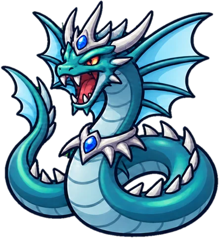
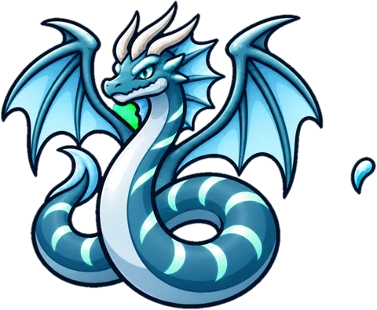
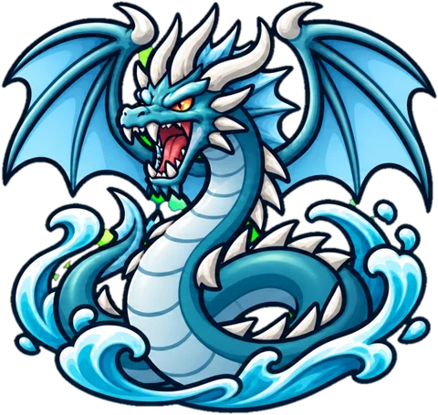
Frosthorn / Cryohorn / Absolyte
עיצוב מחדש של שלבים 2-3 (שלב 1 נשאר)


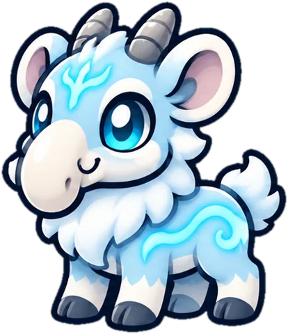
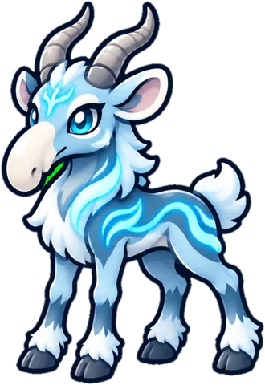
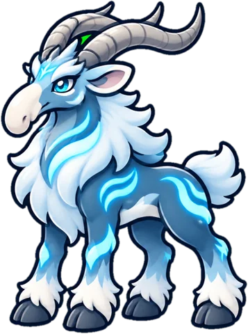
Padsprout / Padoctor / Padbloom
עיצוב מחדש של שלבים 2-3 (שלב 1 נשאר)

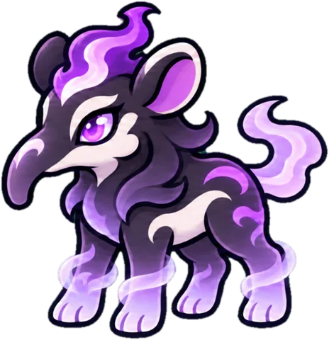
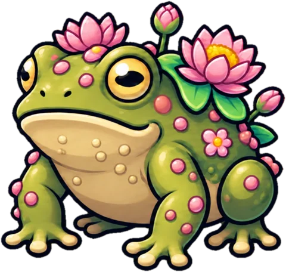
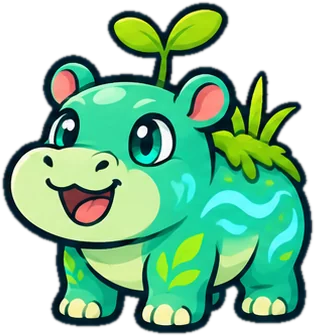
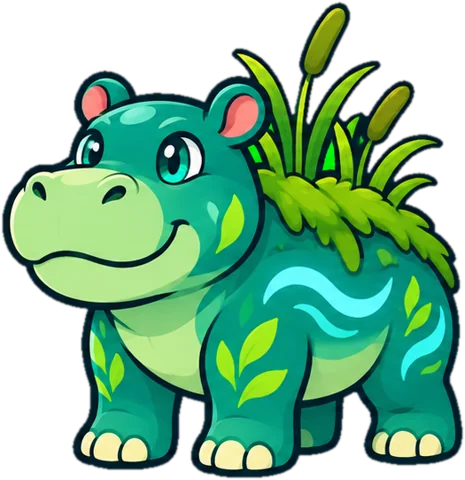
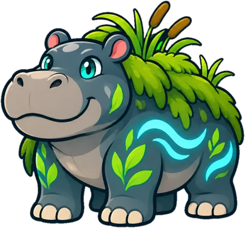
Sproukit / Thornbark / Sylvox
עיצוב מחדש של שלבים 2-3 (שלב 1 נשאר)
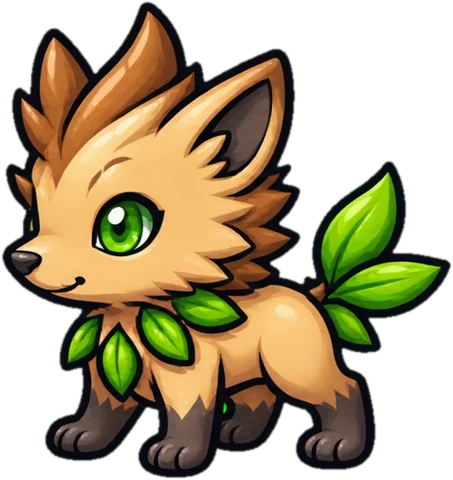
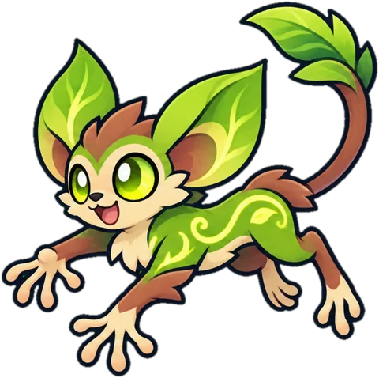


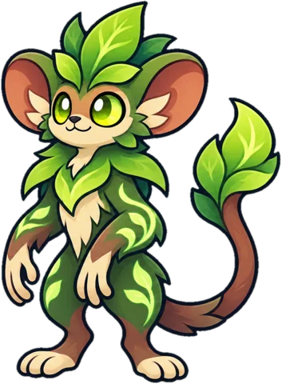
Trunkit / Stonetusk / Terramorph
עיצוב מחדש של שלבים 2-3 (שלב 1 נשאר)

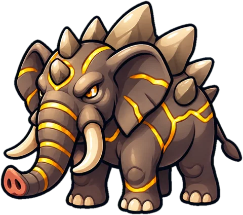

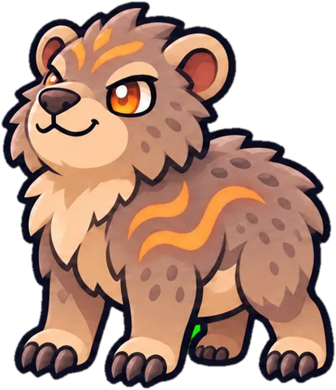
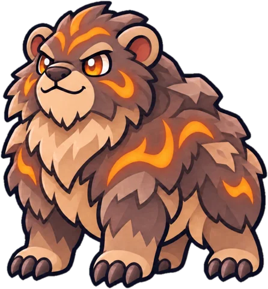
Tholicub / Tholoderm / Tholoknight
עיצוב מחדש של שלבים 2-3 (שלב 1 נשאר)
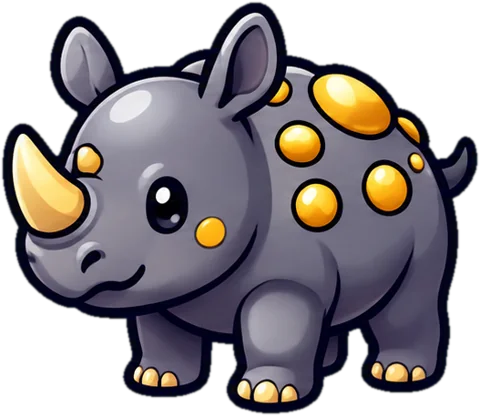

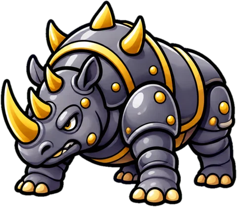
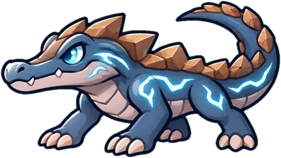
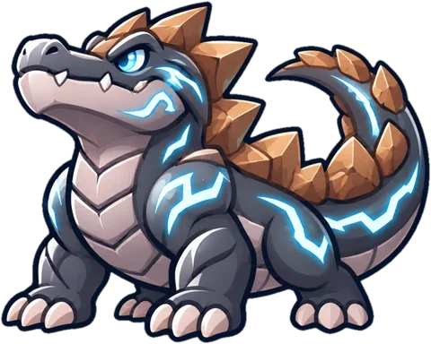
Viperyx / Noxyx / Toxhydra
עיצוב מחדש של שלבים 2-3 (שלב 1 נשאר)


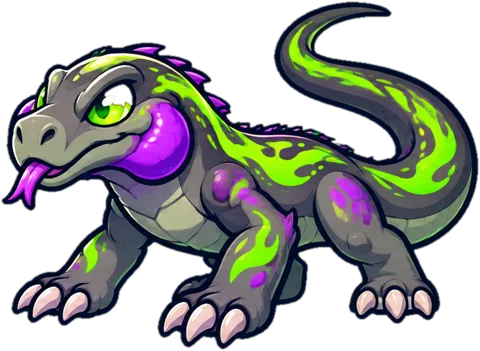
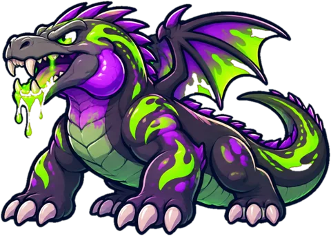
Sproukit / Verdash / Floravex
עיצוב מחדש של שלבים 2-3 (שלב 1 נשאר)


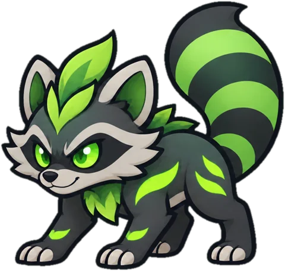
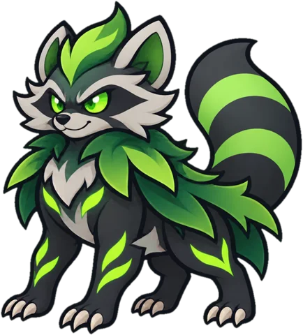
Crystyx / Glaceryx / Hydrocryss
עיצוב מחדש של שלבים 2-3 (שלב 1 נשאר)


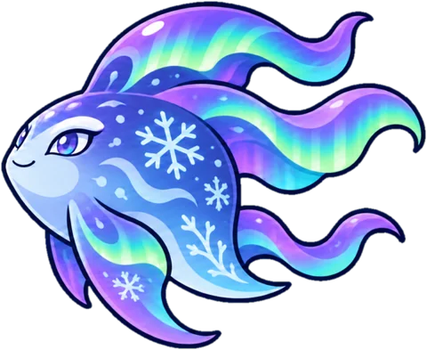
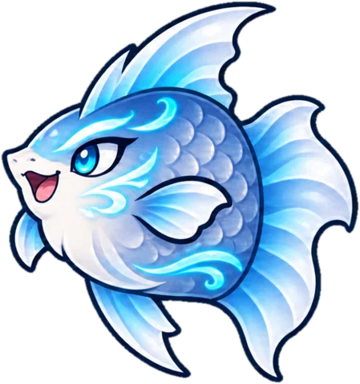
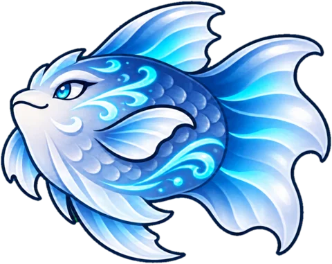
Frostkitten / Glacepard / Crystalion
עיצוב מחדש של שלבים 2-3 (שלב 1 נשאר)

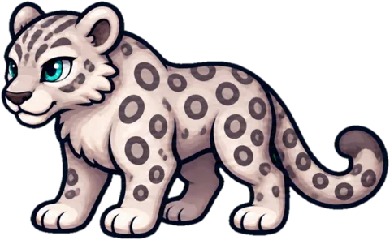

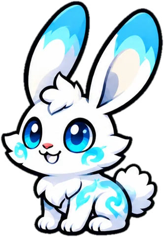
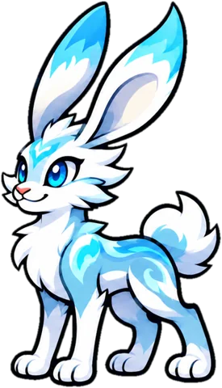
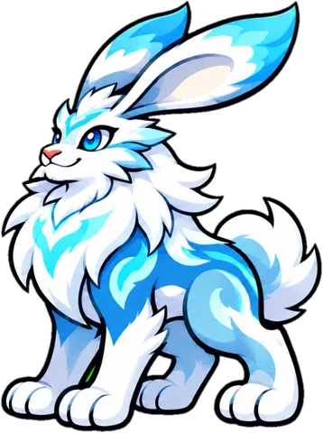
Embroot / Lavamaw / Infernoflora
עיצוב מחדש של שלבים 2-3 (שלב 1 נשאר)

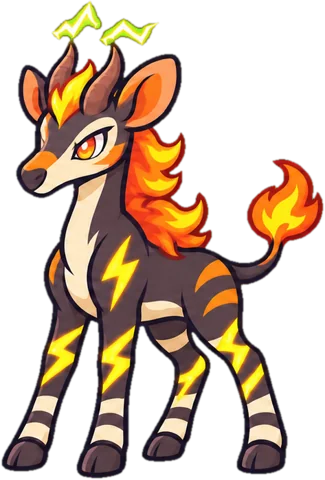

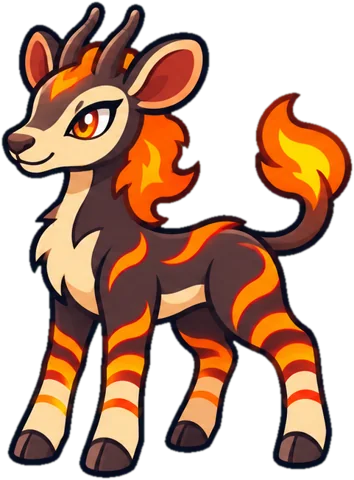
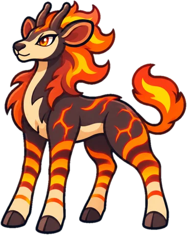
Scuttlet / Armadex / Thanatusk
עיצוב מחדש של שלבים 2-3 (שלב 1 נשאר)
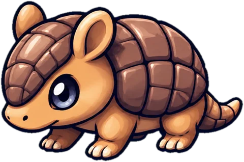
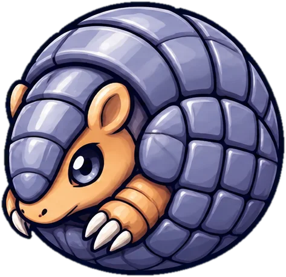

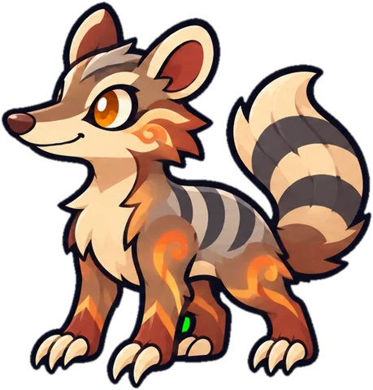
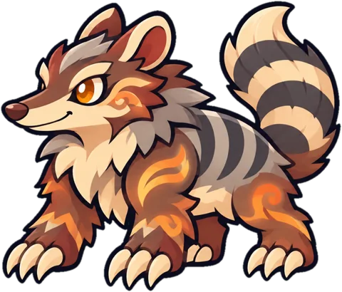
Toxynlet / Venomyx / Dracotoxus
עיצוב מחדש של שלבים 2-3 (שלב 1 נשאר)
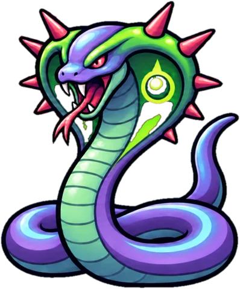

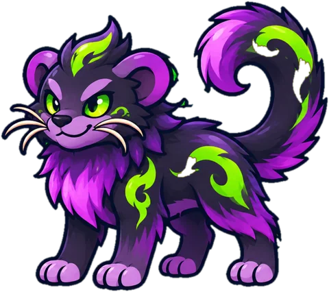
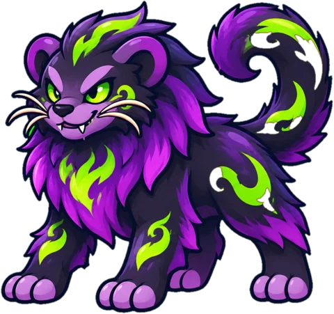
Vexfang / Vexserpent / Vexmaw
עיצוב מחדש של שלבים 2-3 (שלב 1 נשאר)


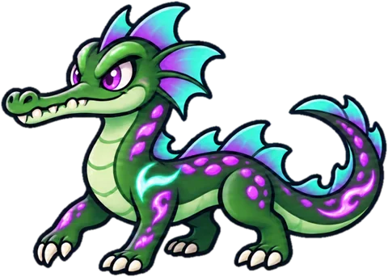
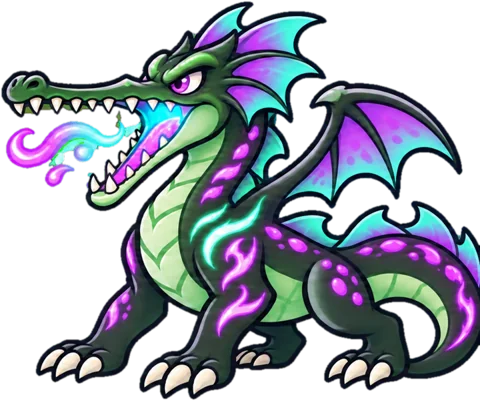
Brahling / Brahman / Divyahm
עיצוב מחדש של שלבים 2-3 (שלב 1 נשאר)


Sparkbok / Flambrok / Infernok
עיצוב מחדש של שלבים 2-3 (שלב 1 נשאר)

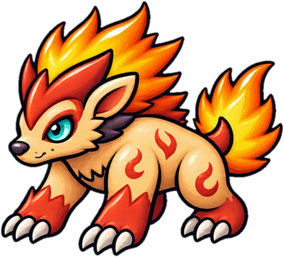
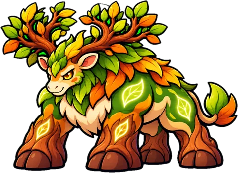
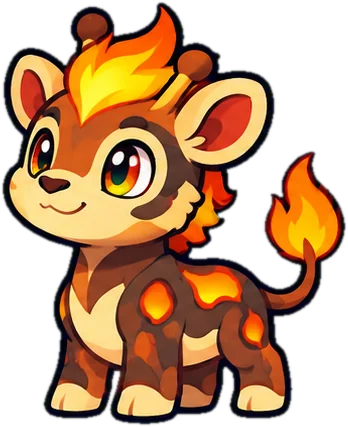
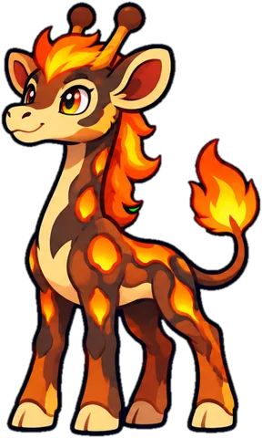
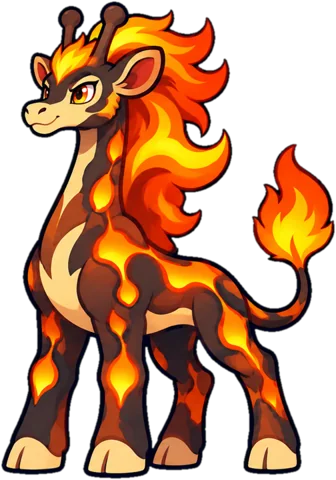
Frondhoot / Frondwise / Frondophage
עיצוב מחדש של שלבים 2-3 (שלב 1 נשאר)

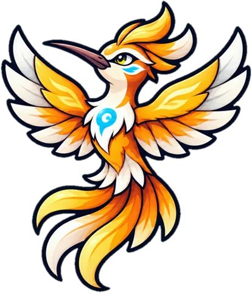
Cubfrost / Ursalid / Glacieroth
עיצוב מחדש של שלבים 2-3 (שלב 1 נשאר)

Nocturnyx / Nocturnox / Nocturnarch
עיצוב מחדש של שלבים 2-3 (שלב 1 נשאר)


Scarynip / Scarbeam / Scaryx
עיצוב מחדש של שלבים 2-3 (שלב 1 נשאר)

Thornling / Thornquill / Thornveil
עיצוב מחדש של שלבים 2-3 (שלב 1 נשאר)


Cobralet / Vipyx / Cobraeth
עיצוב מחדש של שלבים 2-3 (שלב 1 נשאר)


Thornyx / Quillhog / Fernarch
עיצוב מחדש של שלבים 2-3 (שלב 1 נשאר)


Glimmerfin / Luminaw / Abysslight
עיצוב מחדש של שלבים 2-3 (שלב 1 נשאר)


Burmite / Burmoth / Burmatog
עיצוב מחדש של שלבים 2-3 (שלב 1 נשאר)


Embole / Magmole / Infernole
עיצוב מחדש של שלבים 2-3 (שלב 1 נשאר)


Glacix / Frostmane / Cryofang
עיצוב מחדש של שלבים 2-3 (שלב 1 נשאר)


Spinkling / Spinnex / Vexarantula
עיצוב מחדש של שלבים 2-3 (שלב 1 נשאר)